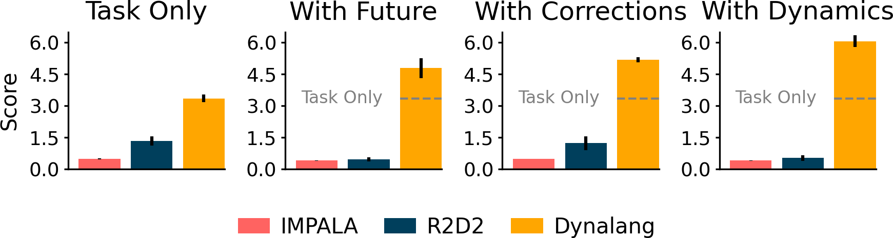
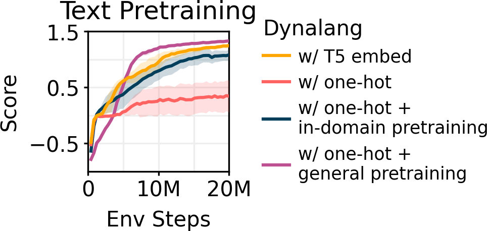

To interact with humans in the world, agents need to understand the diverse types of language that people use, relate them to the visual world, and act based on them. While current agents learn to execute simple language instructions from task rewards, we aim to build agents that leverage diverse language that conveys general knowledge, describes the state of the world, provides interactive feedback, and more. Our key idea is that language helps agents predict the future: what will be observed, how the world will behave, and which situations will be rewarded. This perspective unifies language understanding with future and prediction as a powerful self-supervised learning objective. We present Dynalang, an agent that learns a multimodal world model that predicts future text and image representations and learns to act from imagined model rollouts. Unlike traditional agents that use language only to predict actions, Dynalang acquires rich language understanding by using past language also to predict future language, video, and rewards. In addition to learning from online interaction in an environment, Dynalang can be pretrained on datasets of text, video, or both without actions or rewards. From using language hints in grid worlds to navigating photorealistic scans of homes, Dynalang utilizes diverse types of language to improve task performance, including environment descriptions, game rules, and instructions.
During online interaction, Dynalang is trained continuously from experience data the agent collects while acting in the environment. We treat language as an observation modality, inputting it into the world model along with image observations. Dynalang receives one token at each timestep, which matches how agents would receive streams of multimodal observations in the real world and enables the agent to take actions while reading text.

(a) The world model compresses the text and image at each timestep to a latent representation. From the representation, the model is trained to reconstruct the original observations, predict rewards, and predict the representation at the next timestep.
Intuitively, the world model learns what it should expect to see in the world given what it reads in text. (b)The policy operates on top of the compressed world model representations. It is trained on imagined rollouts from the world model and learns to take actions that maximize predicted returns.
We introduce HomeGrid to evaluate agents in an environment where they receive
language hints in addition to task instructions. Hints in HomeGrid simulate knowledge that agents might learn from humans or read in text, providing information that is helpful but not required to solve tasks:
- Future Observations describe what agents might observe in the future, e.g, "The plates are in the kitchen."
- Corrections provide interactive feedback based on what the agent is doing, e.g, "Turn around."
- Dynamics describe the dynamics of the environment, e.g, "Pedal to open the compost bin."
Even though agents do not receive explicit supervision for what observations a piece of text corresponds to, Dynalang learns to ground language of all types to the environment via the future prediction objective. Dynalang outperforms language-conditioned IMPALA and R2D2 that struggle to use different kinds of language and often do worse with language beyond instructions.

We evaluate on the Messenger game environment to test how agents learn from longer and more complex text that requires multi-hop reasoning over text and visual observations. Agents must reason over text manuals describing the dynamics of each episode and combine them with observations of the entities in the environment to determine which entities to get messages from and which to avoid. Dynalang outperforms IMPALA and R2D2, as well as the task-specific EMMA baseline that uses a specialized architecture to reason over text and observations, particularly on the most difficult Stage 3.


We also show that Dynalang is able to handle photorealistic visual observations and perform instruction following in Habitat. Agents must follow natural language instructions to navigate to a goal location in a photorealistic scan of a home. In Dynalang, instruction following can be unified in the same prediction framework by viewing it as future reward prediction.
Just like language can affect agents' predictions of what they will see, what an agent observes can also affect what language it expects to hear (e.g. true statements about what it has seen). By outputting language in the action space in LangRoom, we show that Dynalang can generate language grounded in environment to perform embodied question answering.
Because world modeling with language is decoupled from learning to act with a world model, Dynalang can be pretrained with offline data without action or reward labels. This capability provides a way for Dynalang to benefit from large-scale offline datasets, all within a single model architecture. We pretrain Dynalang with text-only data, learning token embeddings from scratch. Pretraining the model on general text data (TinyStories, 2M short stories) improves downstream RL task performance on Messenger compared to using pretrained embeddings.

We can generate text from the world model like a language model by sampling rollouts in latent space and decoding the token observation from the representation at each timestep. We find that the model generations are surprisingly coherent, despite not being trained explicitly with the language modeling objective.
Prompt: One day, a young boy named Tim found a dull, round rock. He picked it up and looked at it. He thought it was not very fun, but he took it with him to the park. At the park, Tim
True: saw a girl named Sue. She had
Samples:
- he met. favorite friend He put it his to
- met a girl named Sue. Sue saw the ball
- saw a stick top Sam. He kept playing with
- played with his friends and but they friends!" Li
- met a girl named Lily.</s> ly saw
Prompt: Once upon a time, there was a little boy named Tom. Tom had a special belt that he loved to wear. One day, he could not find his belt and felt very sad. Tom's mom saw him and
True: asked, "Why are you sad, Tom?"
Samples:
- frustrated and asked him what was rude. Once upon
- asked, "Why are you sad, Tom?"</s>
- asked, "Howeny, I did, get
- said, "Don't worry, Tom. We
- said, "To tree, you look be in
@article{lin2023dynalang,
author = {Lin, Jessy and Du, Yuqing and Watkins, Olivia and Hafner, Danijar and Abbeel, Pieter and Klein, Dan and Dragan, Anca},
title = {Learning to Model the World with Language},
booktitle = {arXiv preprint TODO},
year = {2023},
}